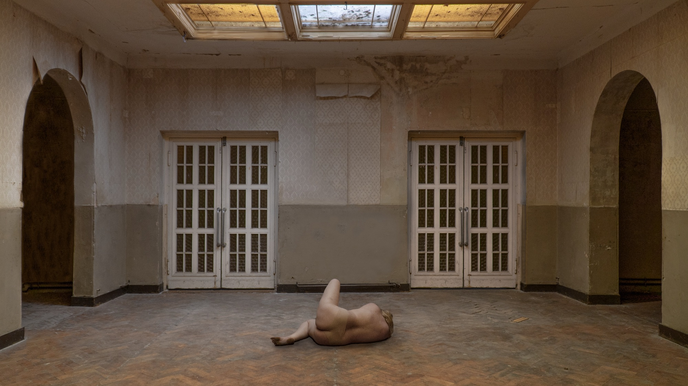
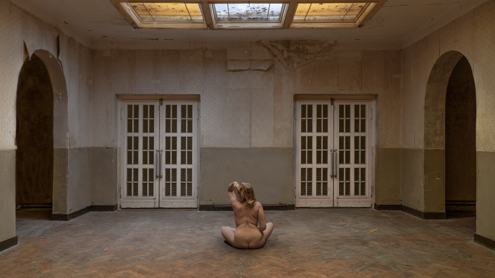
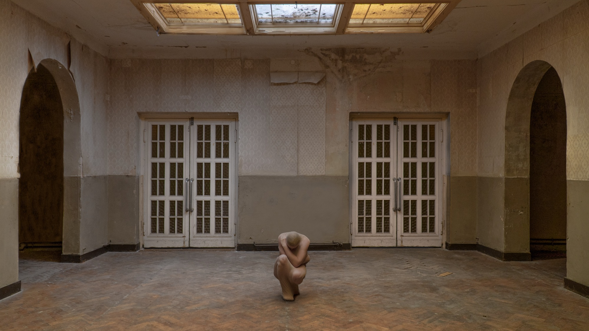
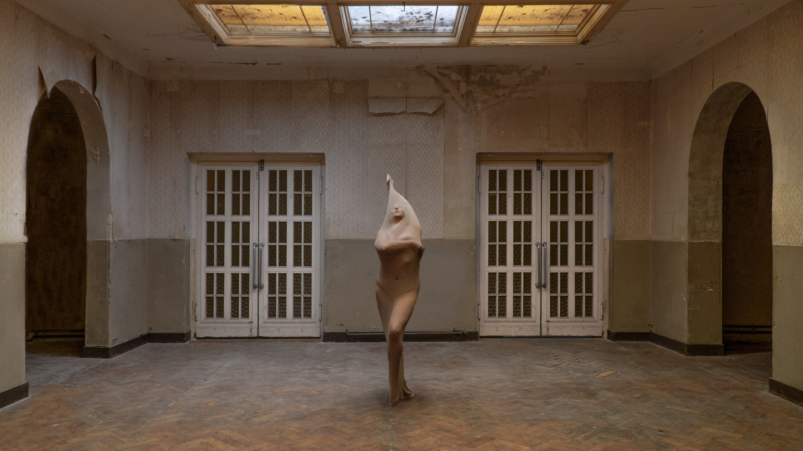
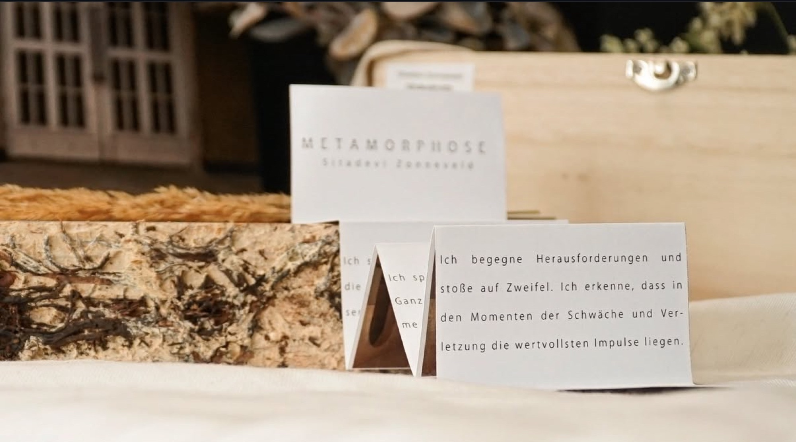
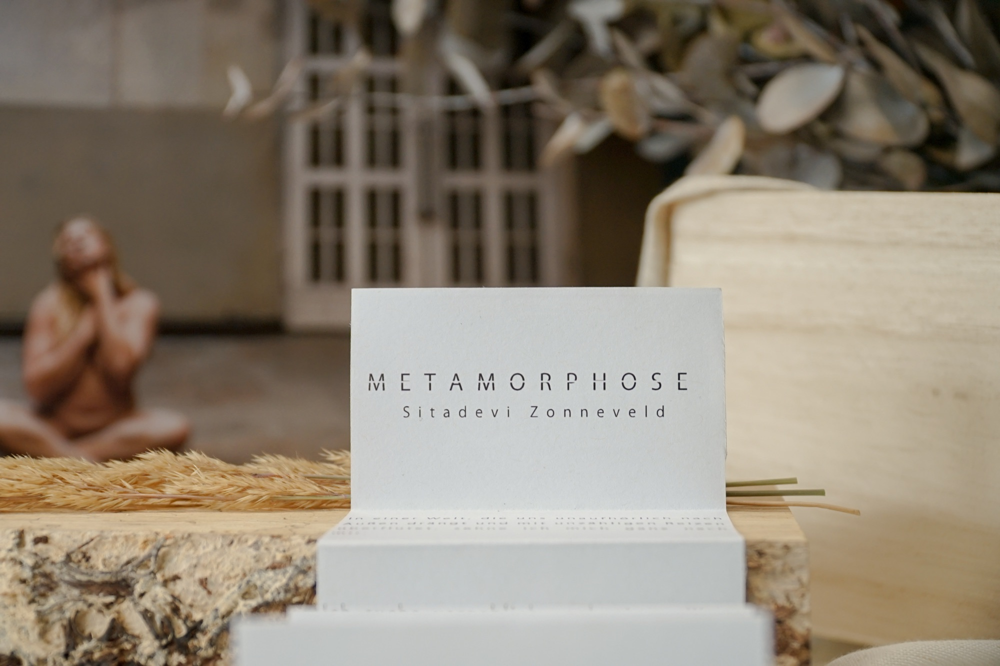

Self Portrait
Vulnerability, self-perception, and transformation — where doubt gradually turns into confidence, and fear opens into courage.

Letting go,
growing, shifting inward.
Metamorphose is a personal photographic series exploring vulnerability, self-perception, and transformation. It reflects a process of letting go, growing, and shifting inward — where doubt gradually turns into confidence, and fear opens into courage.
Through self-portraiture, the work traces an evolving inner dialogue and invites the viewer into a space of introspection. It moves from external disorientation toward a more grounded encounter with the self.
The series was realized in July 2023 in the abandoned theater of the former military town of Wünsdorf, Germany. The location becomes both setting and metaphor — a space of memory, silence, and transition.







In a world that relentlessly pushes us outward
and overwhelms us with countless stimuli,
I long to return to myself.
I search in vain for a way to leave
the disorientation behind.
I explore the subtle changes happening within me.
I feel the yearning for clarity.
Pure and unfiltered — just me. I take my time.
It is a time for lingering and solitude.
I allow myself to confront my fears and uncertainties.
I face challenges and encounter doubt.
I recognize that the most valuable impulses
lie in moments of weakness and vulnerability.
I am here, firmly with myself.




- Discipline
- Photography
Art Direction
Self-Portraiture - Location
- Wünsdorf, Germany
Abandoned Theater - Year
- 2023